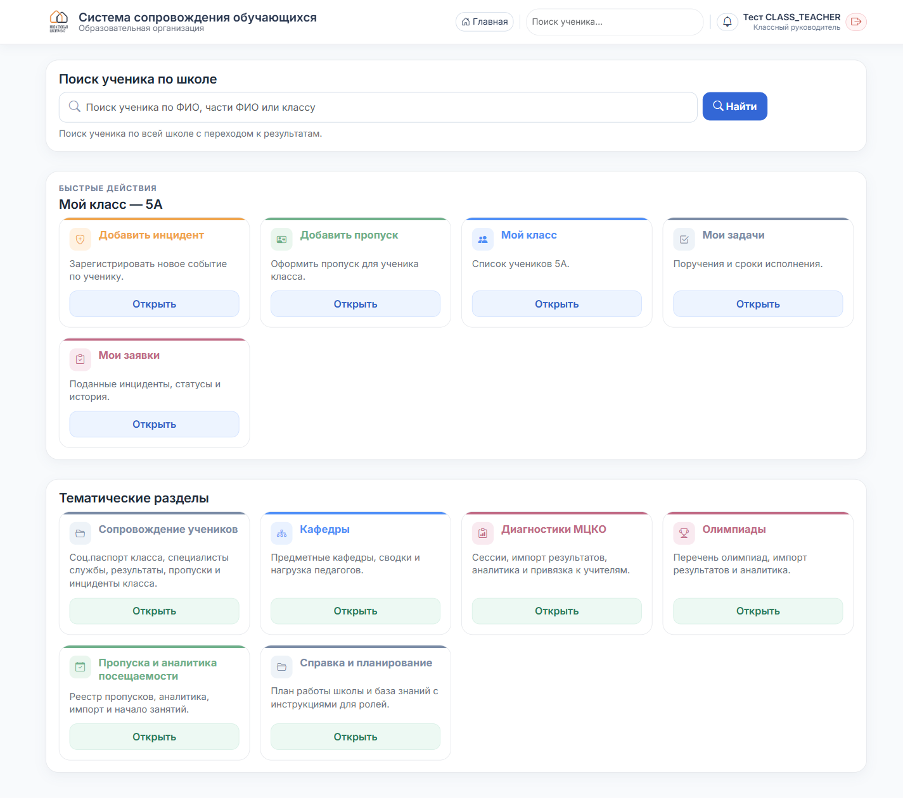

Классный руководитель
С чего начать
Что это за система, как войти и что вы увидите на главной.
1
Войдите в систему
Откройте в браузере http://10.174.241.7/. Введите логин и пароль, которые выдал администратор.

2
Главная страница
В правом верхнем углу — ваше имя и роль «Классный руководитель». Сразу под поиском заголовок «Мой класс — 5А» (у вас будет номер вашего класса).

3
Что за плитки
Быстрые действия (5 плиток) — то, что нужно каждый день:
- Добавить инцидент — зарегистрировать событие.
- Добавить пропуск — оформить отсутствие.
- Мой класс — список учеников вашего класса.
- Мои задачи — поручения от администрации со сроками.
- Мои заявки — поданные вами инциденты, статусы, история.
Тематические разделы — углублённая работа:
- Сопровождение учеников — соц. паспорт класса, пропуски, инциденты класса, результаты.
- Кафедры · МЦКО · Олимпиады · Пропуска · Справка — дополнительные разделы.
4
Что вам доступно
- Полный доступ к личным карточкам учеников вашего класса.
- Социальный паспорт вашего класса (просмотр и редактирование).
- Подавать инциденты и пропуска по любому ученику школы.
- Смотреть результаты МЦКО, олимпиад, посещаемости по вашему классу.
Карточки детей из других классов вам недоступны — только через общий поиск (видно ФИО и класс, но не открыть).